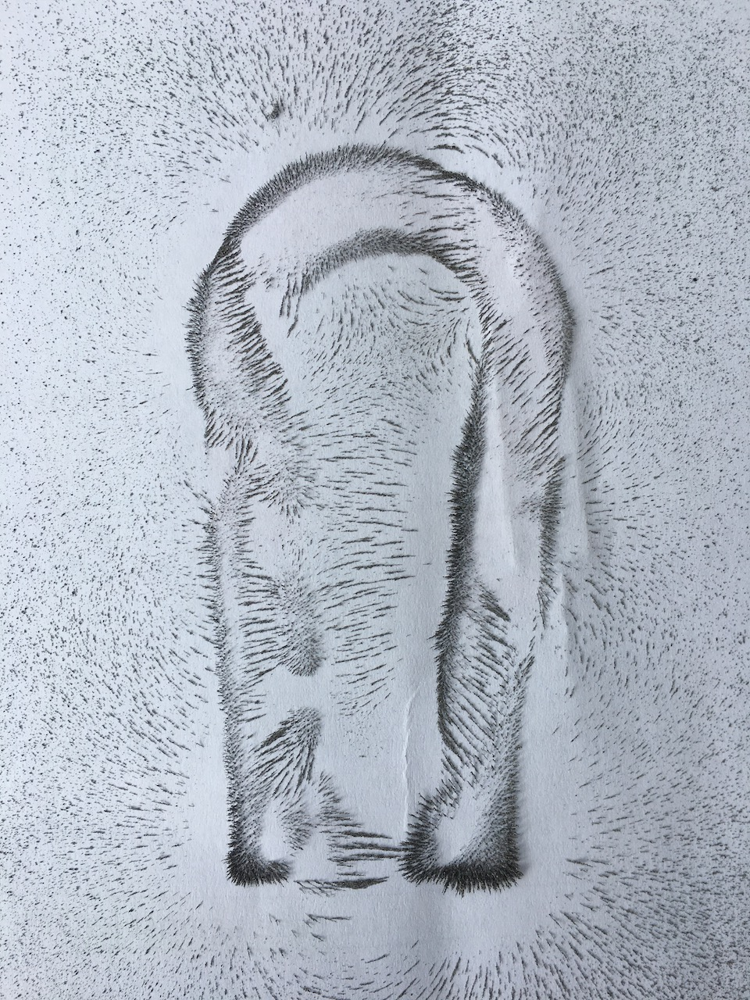
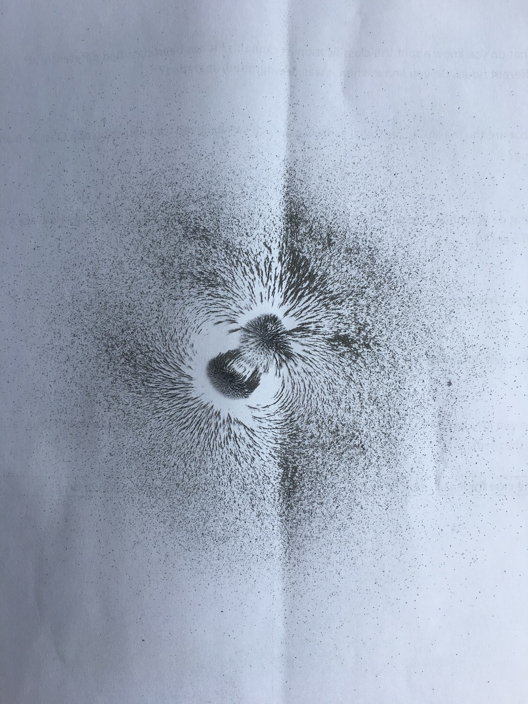
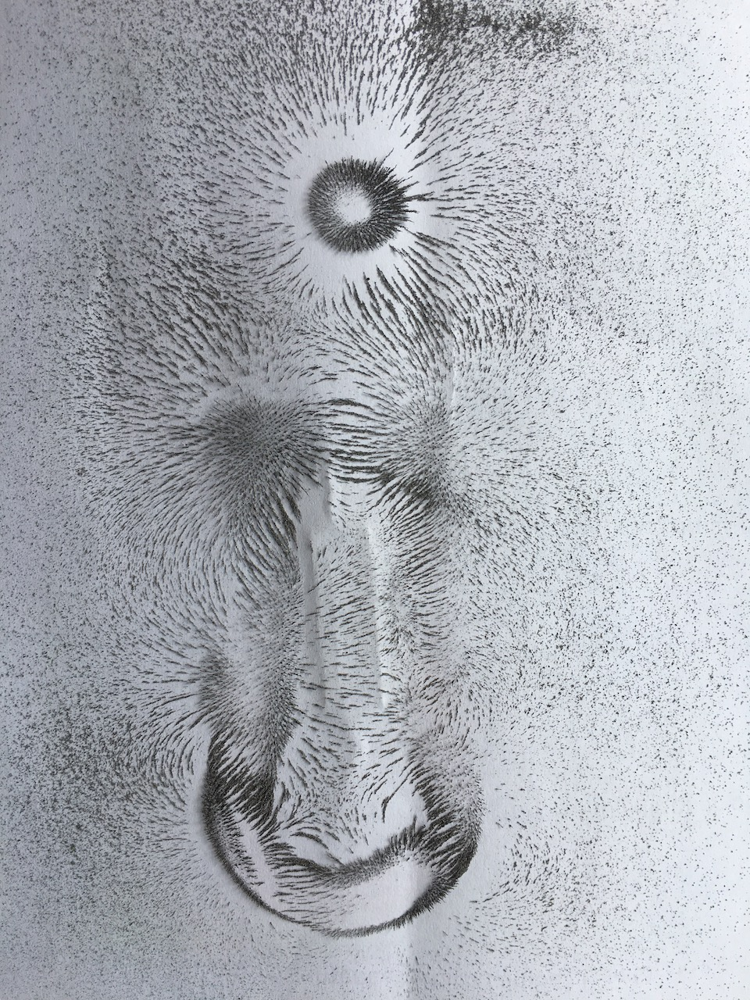
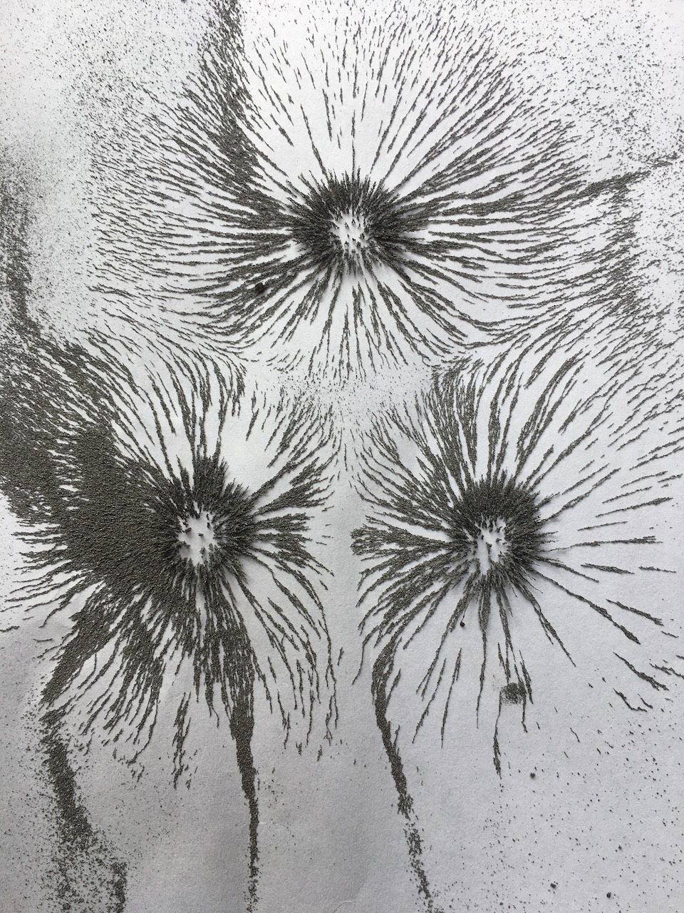
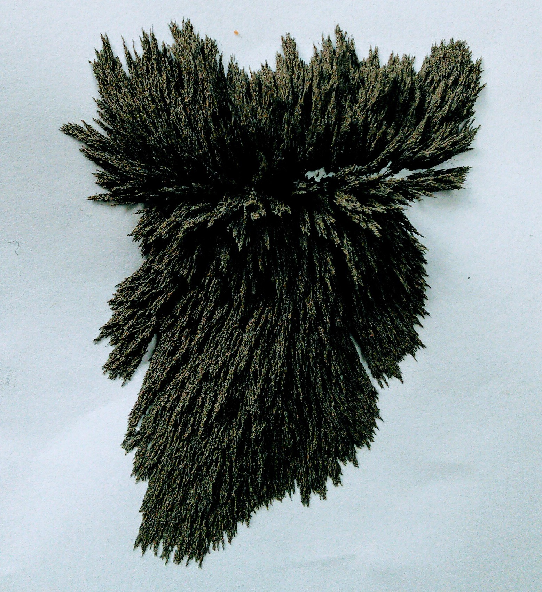
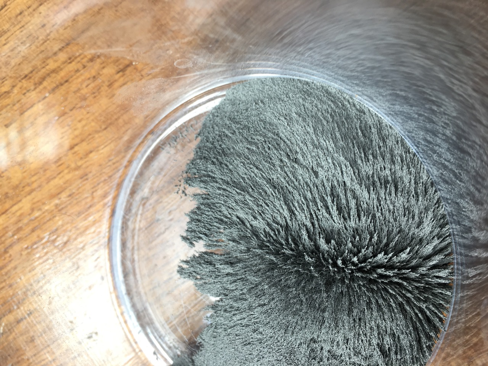

Magnets by Mariannne and Bertie
This week we learnt about magnets.
Some things we've learnt
The word magnet comes from a rock called magnetite. People in ancient Greece and China found the rock had strange properties (yes, Greece and China!).

When a piece of metal is rubbed against magnetite and left to turn on its own, it eventually ends up pointing to Earth's magnetic north! (Not the geographic North which is different). That is how the first compasses were made.
A magnet has two poles, North and South. Only opposite poles attract. For example, if you put a north and south pole together they attract whereas if you put a north and north pole together they repel. The same goes for two south poles.
The type of metals that can be magnetised include iron, nickel and cobalt.

Some things we did
We used some iron filings to see magnetic fields.
   We sprinkled the iron filings on top of pieces of A4 paper (ISO standard for paper sizes) with the magnets underneath. As we did it we spotted fascinating shapes appearing. Those shapes were the magnetic fields.
We also noticed that if you put a magnet underneath a pile of iron filings, it would create a spikey surface.
 Here is a video we recorded where we moved a magnet uder a piece of paper with iron filings.
Electromagnets
An electromagnet is a wire with an eletrical current running through it. If a wire has an eletrical current running through it, it creates a magnetic field around that wire.
To make an electromagnet, you can look at the video below. Becuase of lockdown, we didn't have the right materials, but we will try this when we can.
There are many ways electromagnets differ from normal magnets:
- You can increase the power of the magnetic field by increasing the power of the scorce of energy (E.G. a bigger battery).
- You can also change the direction of the polarity- in short, you can change which pole attracts (north and south)to the wire by changing the direction of the current.
- Finally, you can also control the magnetic field. If you want to, you can turn off an electromagnet but you cannot do that with a normal magnet.

To make a stronger magnetic field you can wrap the wire around an electrical conductor (EG a metal nail.)
We hope you have learnt more about electromagnets from this AMAZING, FANTASTIC website. We have certainly enjoyed making it!
thank you! Marianne and Bertie :)